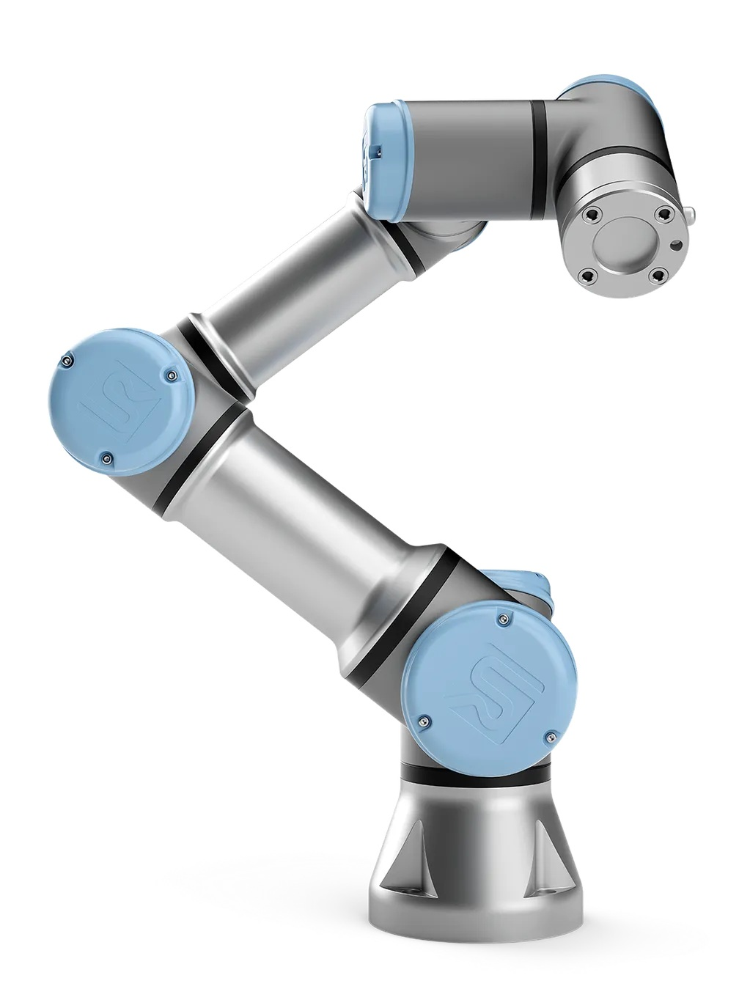

O que é o robô UR3e?
O UR3e é um robô colaborativo criado pela empresa “Universal Robots”. Feito de alumínio, aço e plástico, é o menor braço robô colaborativo vendido por ela.

Adaptado de: Universal Robots
Adaptado de: Universal Robots
Como funciona
O UR3e consegue levantar e manusear objetos de até 3 quilogramas. Por possuir um alcance de 500 milímetros, é ideal para bancadas e espaços pequenos. Além disso, ele é programado para trabalhar de forma segura com humanos, sendo incapaz de machucá-los, o tornando um ótimo robô colaborativo.